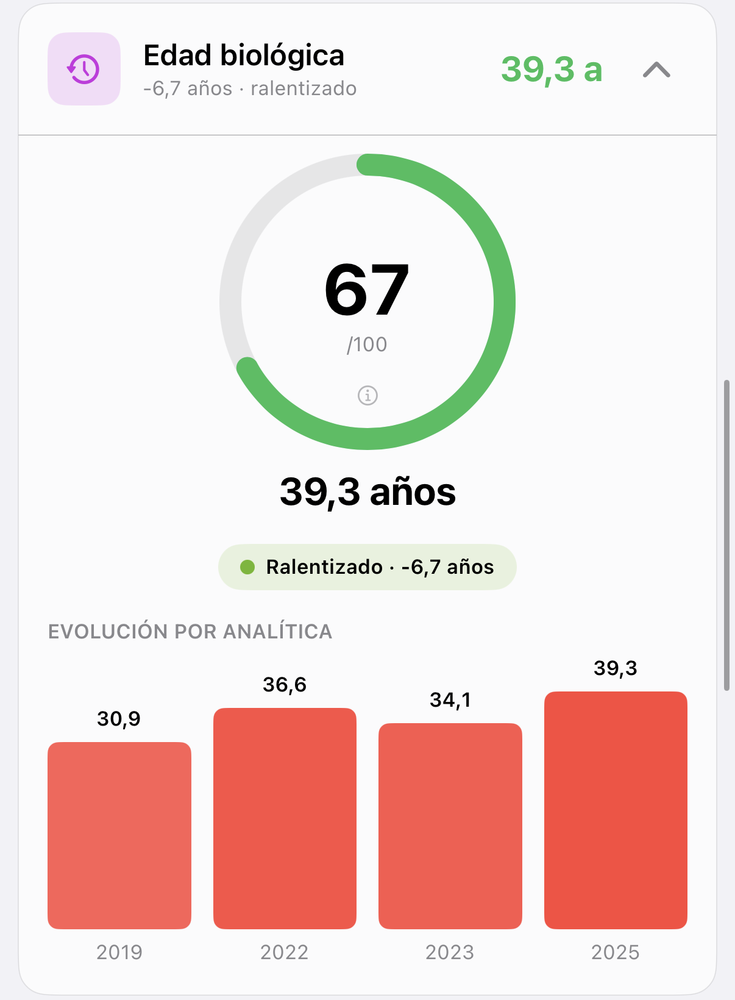

Indicadores Glucovibes
Tienes dos edades. ¿Coinciden?
La de tu DNI y la de tu metabolismo.
Desliza →
Hacemos visible lo invisible
La de tu DNI y la de tu metabolismo.
Desliza →

Captura real de la app Glucovibes de una Viber.
Saber si tu ritmo está acelerado o ralentizado te dice si tus hábitos suman o restan años.
Desliza →
Mantenidas en el tiempo.
glucovibes.com